天星择日
图解天星择日盘。
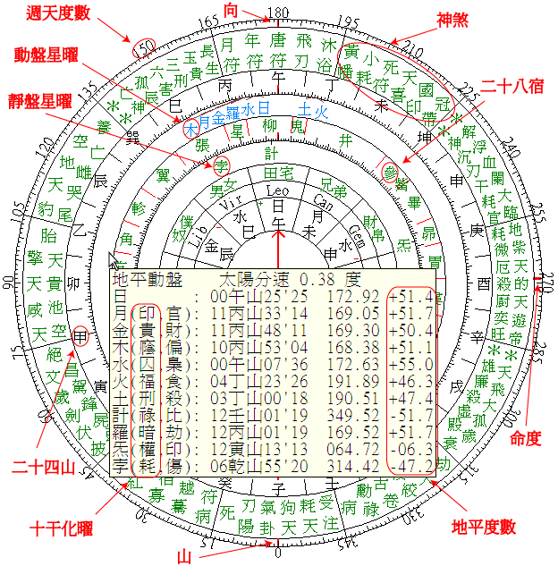
在度数圈按左键可更改静盘太阳位置。注: 加按 Shift 键向以前时间寻找。
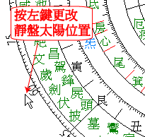
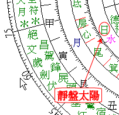
在度数圈按右键可更改动盘太阳位置。
注: 加按 Shift 键向以前时间寻找。
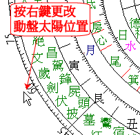
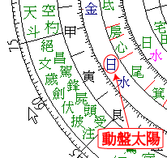
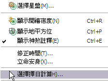
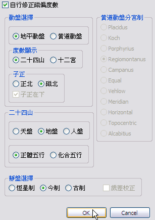
磁偏度数可自行修正或人工修正。
如需要人工修正磁偏度数, 可先关闭
"自行修正磁偏度数"
选项, 后输入磁偏度数。
二十四山可选择天盘， 地盘， 人盘。
二十四山所属可选择正体五行或化合五行。
动盘可选择地平或黄道动盘。
注: 黄道动盘星曜位置以弧角分宫制求得, 先计算星曜所在后天十二宫, 再以星曜入后天十二宫比率计算入黄道十二宫度数, 最后将第一宫安放在卯宫,
第二宫安放在寅宫, 依此类推, 黄道动盘入宫度数, 只可作参考用。
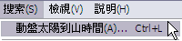
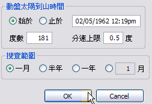
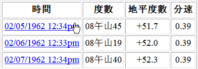
选择动盘太阳到山度数及搜查范围, 按 OK, 再按动盘太阳到山时间连结可更改星盘。
图解地平方位盘。
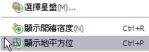
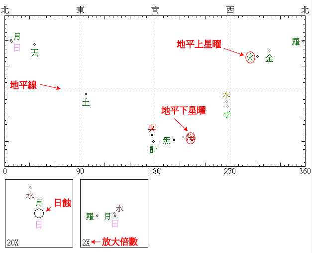